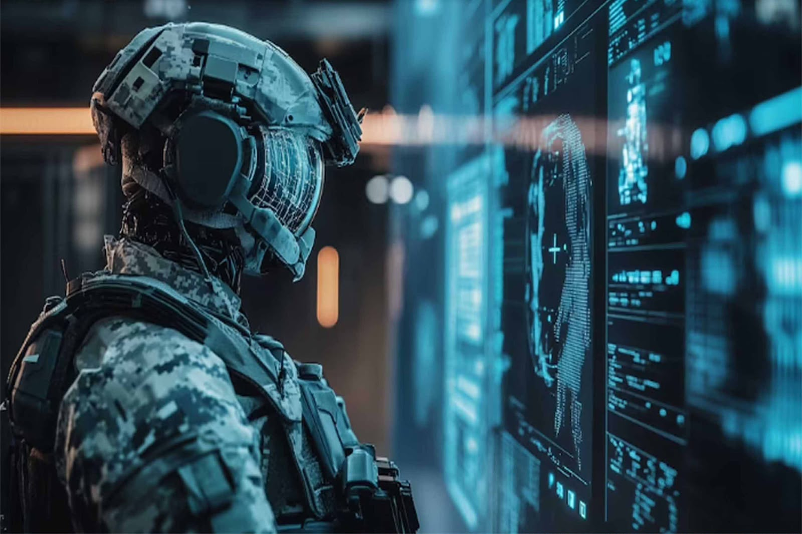
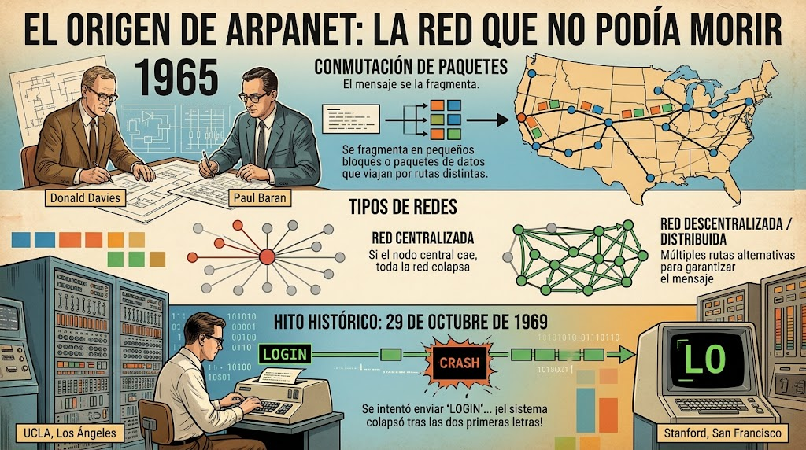
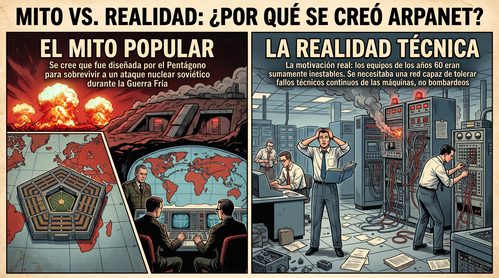
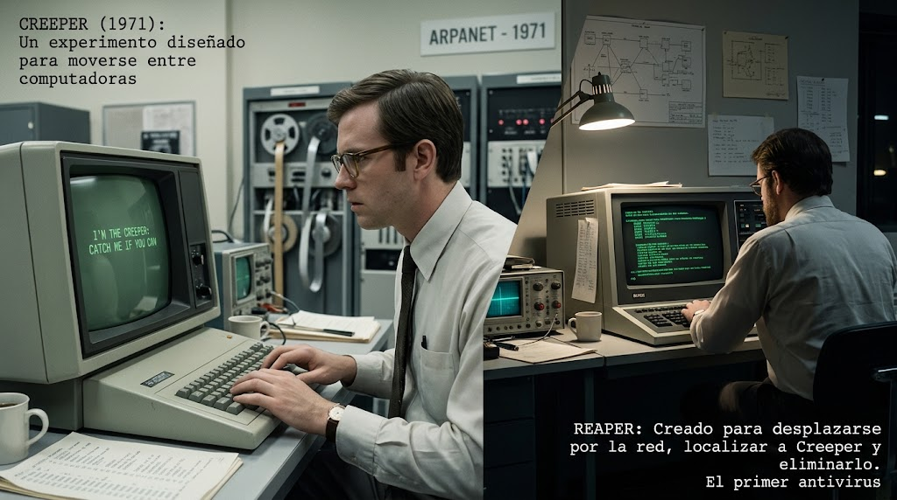
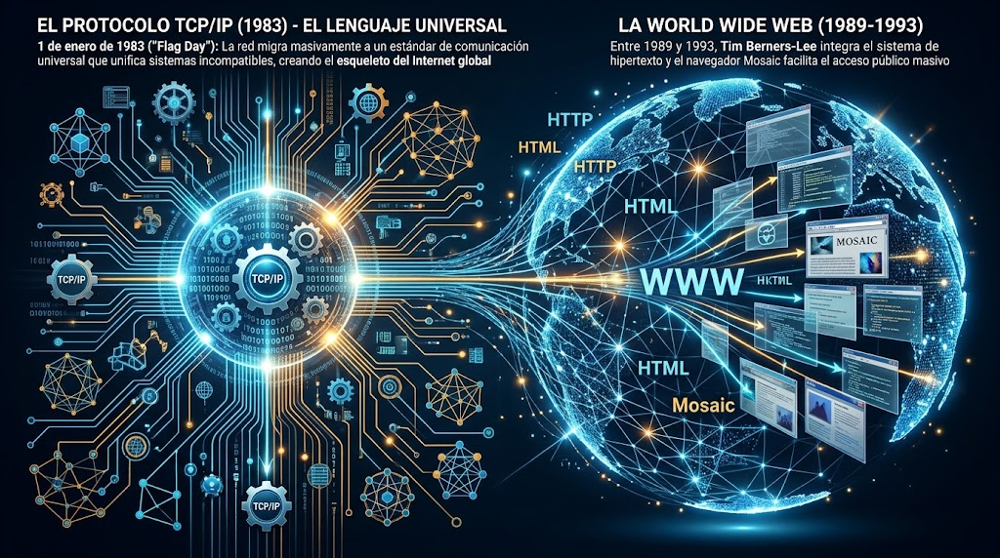
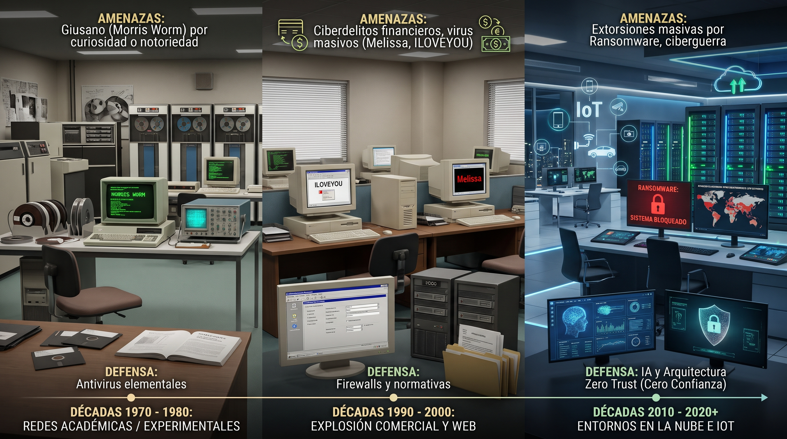
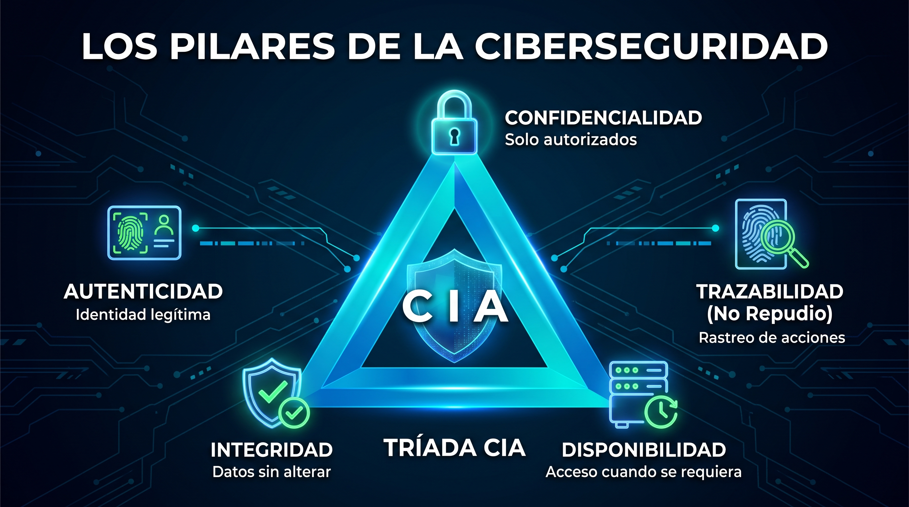
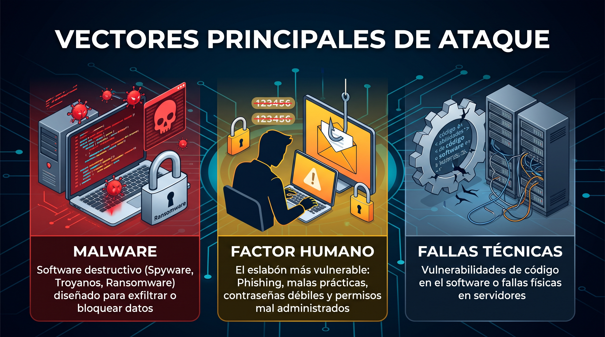
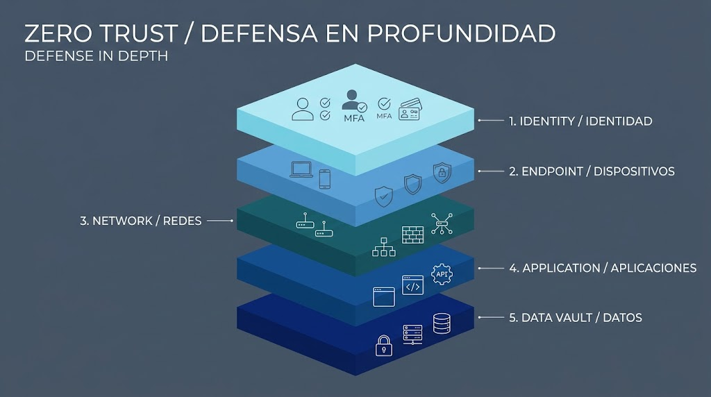
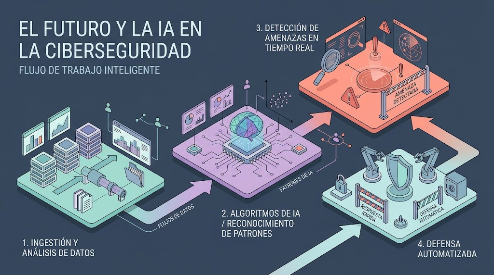

Evolución histórica desde ARPANET hasta la Inteligencia Artificial, el modelo Zero Trust, los pilares de la seguridad de la información y la estrategia de defensa en profundidad.
Contestar CuestionarioUtiliza las flechas o desliza con el dedo/mouse para recorrer los 10 temas. Da clic para ir al tema.

El ciclo incesante entre creación de redes, explotación de vulnerabilidades y protección.

La conmutación de paquetes, redes distribuidas y el primer mensaje transmitido en 1969.

Ataque nuclear vs. tolerancia a fallos técnicos de los conmutadores primitivos.

El nacimiento del primer gusano experimental y la invención del primer antivirus en 1971.

La estandarización global de 1983 y la llegada posterior de la World Wide Web.

De bromas académicas a virus financieros masivos y ciberguerra de Estados.

Confidencialidad, Integridad, Disponibilidad, Autenticidad y Trazabilidad.

Malware automatizado, vulnerabilidades técnicas y el factor humano.

Controles defensivos multinivel y la filosofía 'Nunca confíes, siempre verifica'.

Enfrentamiento de Inteligencias Artificiales, algoritmos cuánticos y responsabilidad del usuario.
Haz clic sobre cualquier imagen para verla en tamaño completo
La ciberseguridad es un ciclo dinámico y continuo conocido como el juego del gato y el ratón. A medida que la tecnología avanza, también lo hacen las vulnerabilidades y los mecanismos necesarios para protegerlas.
En 1965, Donald Davies y Paul Baran introdujeron el concepto revolucionario de la conmutación de paquetes, el cual fragmenta la información en pequeñas piezas que viajan por rutas distintas a través de una red distribuida.
El Mito Popular: Se sostiene comúnmente que ARPANET fue diseñada por el Pentágono exclusivamente para sobrevivir a un ataque nuclear soviético durante la Guerra Fría.
La Realidad Técnica: La motivación principal era que los equipos informáticos y nodos de conmutación de los años 60 eran sumamente inestables e infiables. La red necesitaba una arquitectura robusta capaz de tolerar fallos técnicos continuos de las máquinas, no necesariamente bombardeos.
El Protocolo TCP/IP: El 1 de enero de 1983 ("Flag Day"), la red migró masivamente al protocolo TCP/IP, desarrollado por Vinton Cerf y Robert Kahn. Este estándar funcionó como un idioma universal que interconectó redes heterogéneas, transformando ARPANET en el esqueleto del Internet global.
La World Wide Web: Entre 1989 y 1993, Tim Berners-Lee integró el sistema de hipertexto (WWW) y el navegador Mosaic facilitó el acceso público masivo.
Nuevos Horizontes: La IA se emplea simultáneamente para automatizar la creación de malware adaptativo y para implementar respuestas defensivas inmediatas mediante herramientas EDR/XDR. Paralelamente, la industria desarrolla criptografía post-cuántica.
Responsabilidad Compartida: La tecnología por sí sola resulta insuficiente. La concienciación activa del usuario constituye la capa defensiva definitiva en el entorno personal, educativo y laboral.
Evalúa los conocimientos aprendidos sobre la Historia y Fundamentos de la Ciberseguridad.
Has completado la autoevaluación.